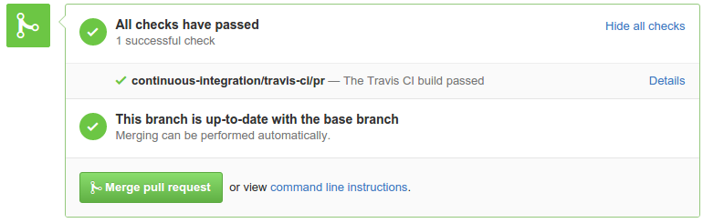
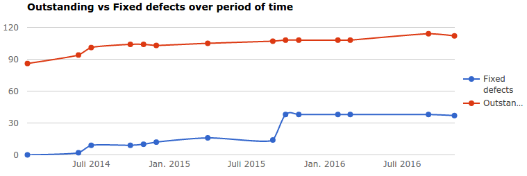

Tools we used to manage our software
- vi
- nano
- kate
- joe
- eclipse
- netbeans
- cp
- rsync
- ftp
Problems with our (old) tools
- no chronological revisions
- multiple different versions (forks) in production
- multiple different local versions
- f00b4r.php
- f00b4r_20040410.php
- f00b4r_production.php
- distributed via scp/rsync/ftp
Way out?
- Version Control System
- tracks changes of files and folder
- when = date of the commit
- who = name of author
- why = commit message
Tools we used to manage our software
Client-server version control software
- One linear software repository
- with all versions
- Server down, no development

And now?
How to fix some of those issues?

Distributed Version Control (recently moves)

Distributed Version Control
- Local development possible
- committing, branching, tagging ...
- working offline
- Exchange of code with all participants possible - directly

The usual branches

masterbranch - production ready statedevelopbranch - development (integration) state
Support branches
- unlike the long-running
masteranddevelopbranches, there are branches with limited life time - for example there might different types of branches
- feature (topic) branches
- release branches
- hotfix branch
Feature branches
- May branch of
developor any other feature branch - Must merged back into
develop- If not, it will be discarded (and deleted)
- Branch naming convention needed
- Typically exist in developer repos only, not in origin

Release branches
- May branch of
develop - Must merged back into
developANDmaster - Branch naming convention:
release-*

Hotfix branches
- May branch of
master - Must merged back into
developANDmaster - Branch naming convention:
hotfix-* - Special form of release branch

Monitoring Plugins
Team Communication
- Mailing Lists
- For legacy reasons
- Mail seems not much loved these days
- Issues / Pull Requests
- Fits developers workflow
- IRC
- Most usual
- Realtime communication for peer coding, release work and discussions
Monitoring Plugins
Usual branches
- Development - master branch
- Hotfixes - maint-X.Y branch
- usual
cherry-pickfrom master
- usual
- Feature - no strict naming convention
- Pull Requests from external contributors
- Branches where developers are working on specific problems
Monitoring Plugins
Special branches
- Proposed Updates - pu branch
- Coverity Tests - coverity/master branch
Monitoring Plugins
Milestones
- For prioritizing work and problems, we are using Milestones
- Issues and Pull Requests are targeted for Milestones

Monitoring Plugins
Code contributions
- via Pull Requests
- Work by developers
- done in Feature branches
- even those are reviewed by other members usually through Pull Requests
Monitoring Plugins
Quality Assurance
- We ship test cases for plugins and C library functions
make testruns those- Can we take further?
- Yes we did!
Monitoring Plugins
Quality Assurance
- Automation with Travis-CI
- This happens also for Pull Requests
- Can be observed directly in the PR

Monitoring Plugins
Quality Assurance
- Reliability of (Travis-)CI
- Only as good as coverage of
make test - When depending on external infrastructure, this may vary
- Depends on reliability of CI-infrastructure / build servers
- Only as good as coverage of
Monitoring Plugins
Quality Assurance
- Code Quality
- Static code analysis performed by Coverity Scan
- Merged master via cronjob once a week into coverity/master, Travis triggers the Coverity Scan

Monitoring Plugins
Infrastruture
- On the surface we massively rely on external resources
- In fact we run own project infrastructure
Git hosting solutions
- Gitlab
- Gogs (Go Git Service)
Gitlab
- Most comprehensive alternative to github
- Community (CE) and Enterprise (EE) Edition (read OpenCore)
- Large and great community
Gogs
- Minimal requirements (Raspberry Pi may fit)
- written in go
- LDAP support
Continuous what? Integration!
Development practice where:
- Developers push code regularly
- (Build and) verified automatically
- Developers (and PM) are notified of the code (and build) status
- Usually when state changes
CI - why?
- Be aware of regressions and problems at an early stage
- Increase productivity and project pace
- Increase reliability of your deployments
CI - Caveat
- Automated tests depends on
- Quality of your tests
- Coverage of your tests
- Developers may only focus on succeeding tests
- Poor tests results into bad code quality
CI - (Self-)hosted solutions
- jenkins.io
- drone.io
- dockunit.io (abandoned)
- gitlab-ci
- captain (abandoned)
- docker-jenkins
CI - Running test frameworks
- Look into static code analysis tools for you used language
- Consider PMD to find inefficient code
Examples
- Get an idea see Travis-CI - Building a PHP project
- Using OCLint with Travis CI or Jenkins CI for testing C, C++, Objective-C

Domesticating Developers and Project Management
Many Software development methodologies


Some more fancy stuff?

Slack looks promising!
- What if Slack servers are breached?
- What if Slack is sold?
- Is there a working export function?
- Subscription

Why did Mattermost happen?
In 2014, Slack became popular in Silicon Valley, and our company adopted it for messaging. But we had a problem–our archives were in our old messaging app. After our subscription expired, the old app wanted us to pay them to access our own data (and export still didn’t work!). We hated being locked in. We fumed. Our discussions, our research, our analyses, and gigabytes of our carefully tagged in-game artwork was all held for ransom by the service we had trusted. Slack was good, but it was another proprietary SaaS app, and we’d just been burned.
Selfhosted Slack alternatives
Mattermost

Do you love fancy stuff?
#ChatOps
Devision of #YoloOps
ChatOps brings the context of work you are already doing into the conversations you are already having. @jfryman
ChatOps

ChatOps

ChatOps